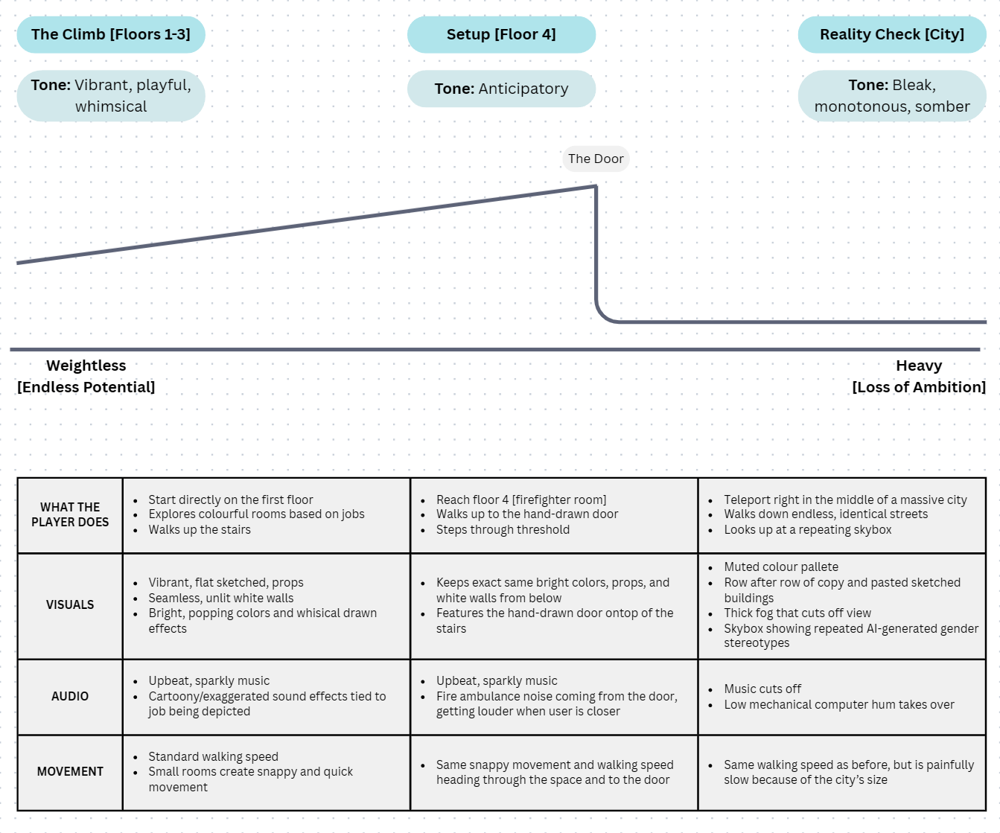
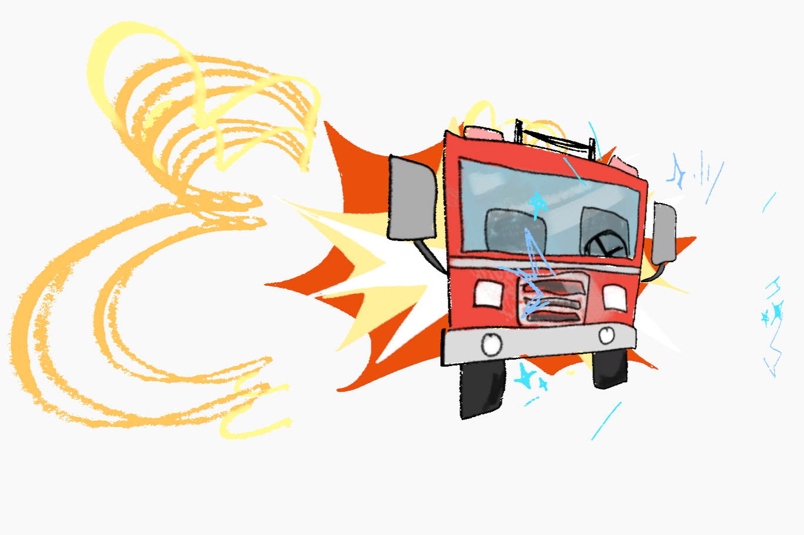
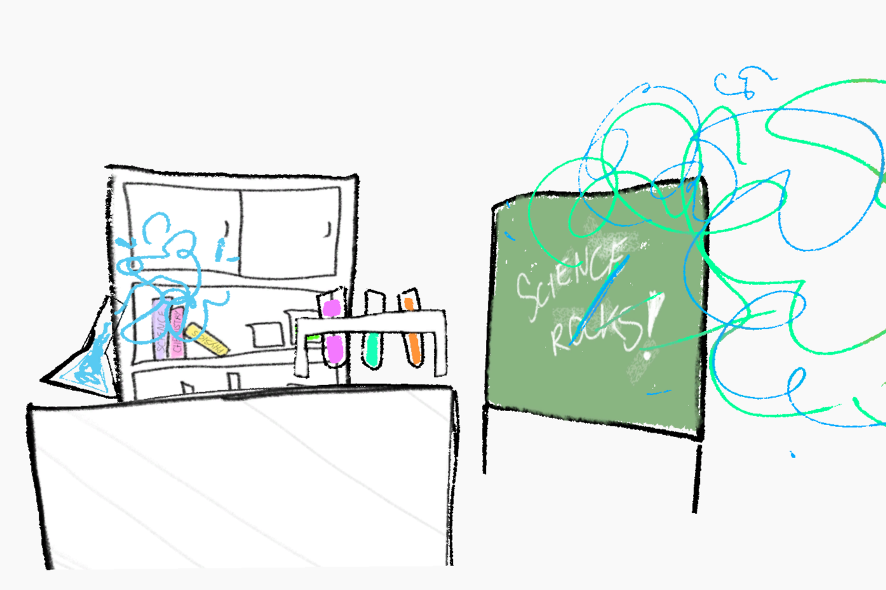
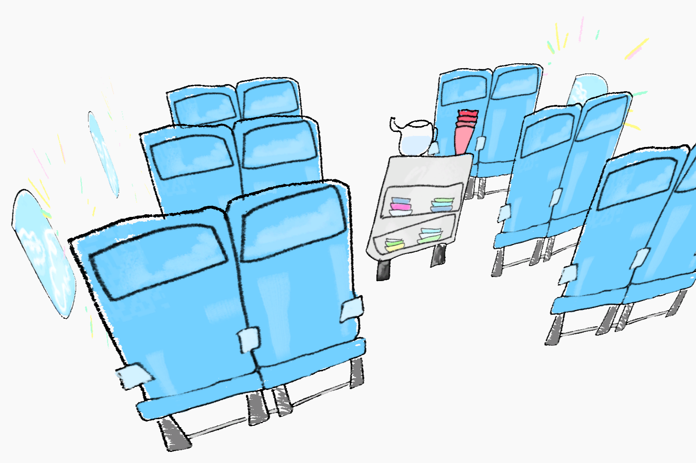
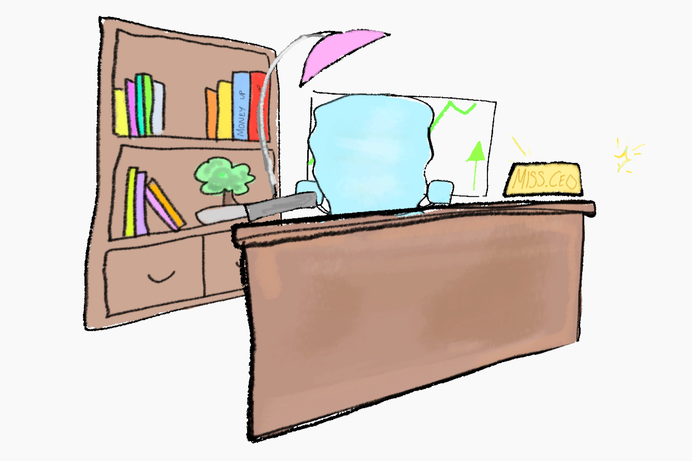
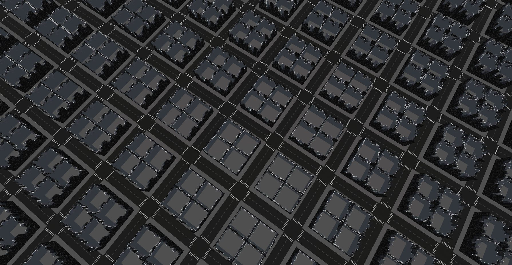
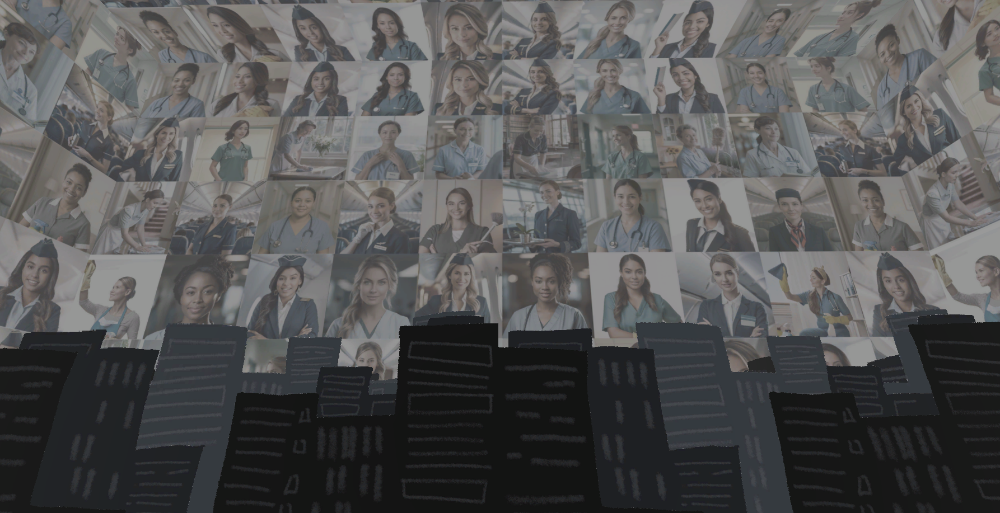

REACH UP FOR THE SKY
Made with: Unity • Clip Studio Paint • Photoshop • ChatGPT • C#
Reach Up for the Sky is an immersive 3D experience exploring how gender bias in AI-generated content can shape children's perceptions of their future ambitions. Experienced through the perspective of a young girl, players climb a bright, colourful, and stylised tower filled with rooms representing different career paths. These spaces reflect the boundless potential of childhood, using colourful hand-drawn 2D sketches and playful audio to create an idealised view of adulthood. Once going past the last floor, users go through a doorway into a stark, repetitive city, where the atmosphere shifts from whimsical to oppressive. In the sky is displayed a digital collage of women confined to stereotypical occupations, transforming the environment into a visual representation of systemic bias. Through environmental and sound design, the experience illustrates how repeated gendered representations can narrow a child's perception of what they are capable of becoming.







